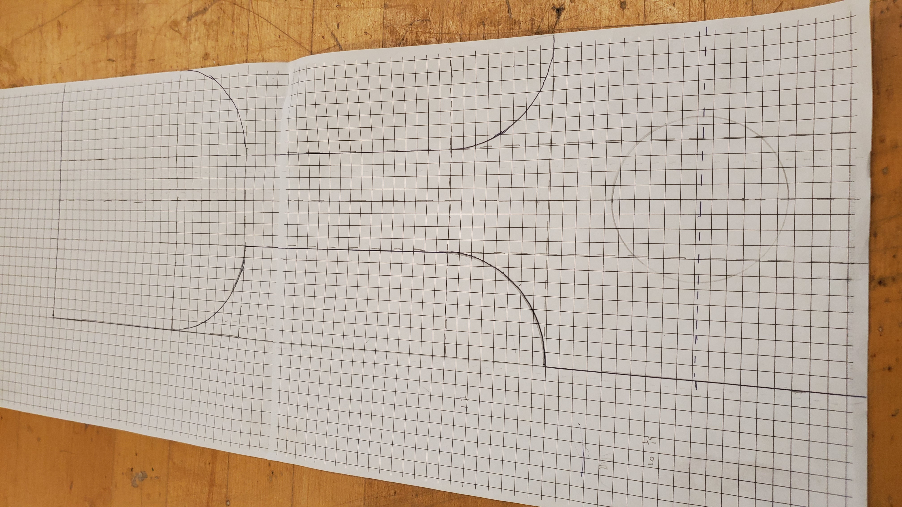
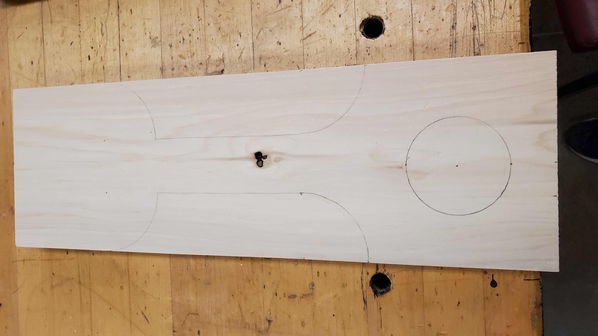
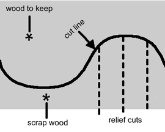
If you made a cut always turn off your machine before taking your piece of wood out of the blade as it can hurt the blade and ruin your work. And always use a wooden stick to remove scrap pieces of wood of the table to reduce chance of injury.After finishing with the band saw I headed over to the oscillating spindle sander which I have used to round out all the cuts and to get the outer layer closer to the line. When using the oscillating spindle sander, turn on the machine and slowly push your wood onto the sander. Don't push too hard, let the machine do the work. Than the machine will start to gradually remove the outer layer of the wood from the direction you pushed it. Continue until satisfaction and then turn off the machine.
Next I headed over to the file, which I have used to remove and straighten any waste beside corners and sides. When using the file, hold the tool by the handle and "scrape" the flat side wherever you need to.
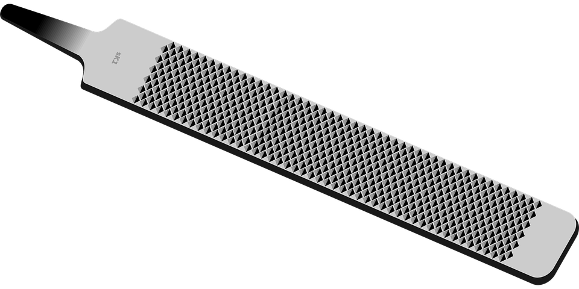
After the file, I used the sand paper. Take a small scrap piece of wood and wrap the sand paper around it. than scrape the sand paper on the sides of the project to smooth it out and to remove the last layer of waste.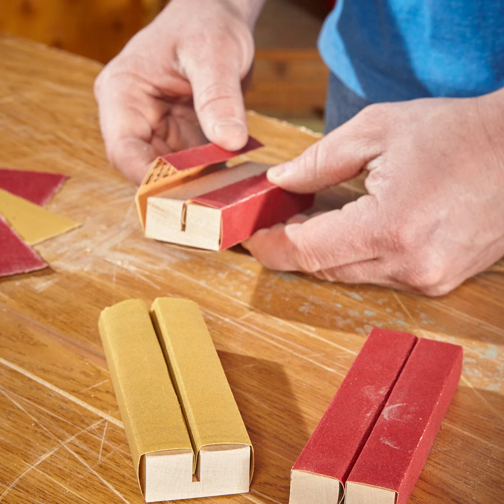
This how my project looks up to right now.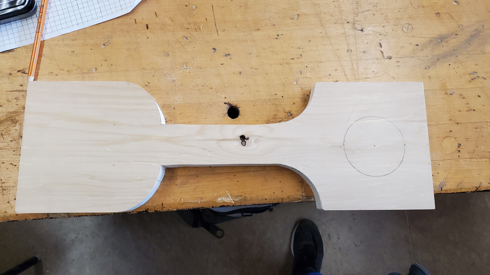
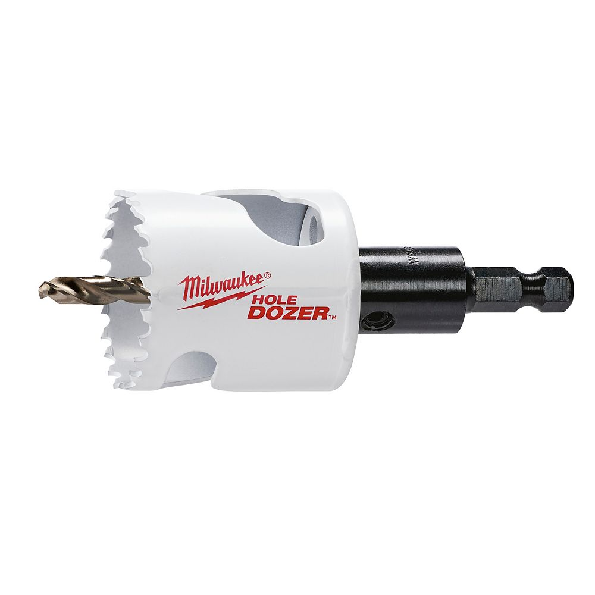
(This is the circe hole cutter)
When using the drill press it is important to lay your work down flat on the table and hold it tight, so for that I used a cam clamp.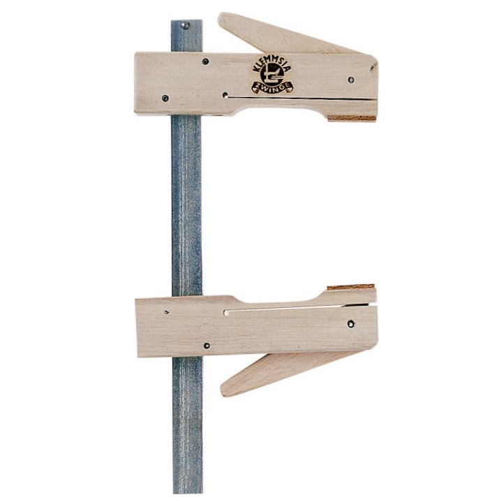
(This is the cam clamp)
I lined up my wood with the drill, used the clamp to hold my project, I then turned on the machine and made a hole almost all the way through. Then I flipped my work and did the other side as well at the exact same spot to make the hole nicer and cleaner. This how my barbeque scraper looked after the drill press.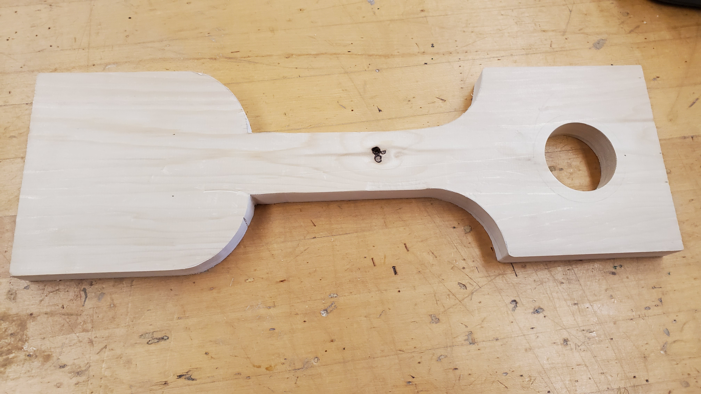
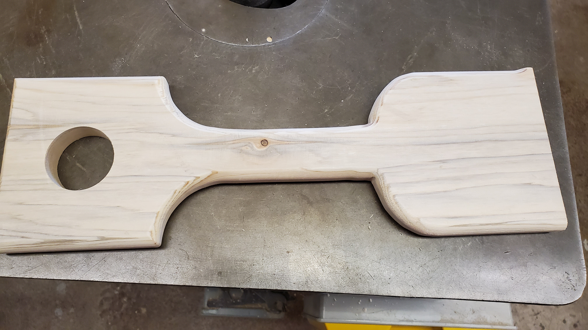
I first used the mitre saw to cut a 45 degree angled straight cut to remove some of the waste wood off. To use the mitre saw stand in front of the machine and put your right hand on the trigger, never cross hands. If it is a sliding saw always push the saw away from you. Get the blade to the angle and place you want, turn on the machine and push the saw through the wood. When you are done turn off the machine before pulling the mitre saw out.
After using the mitre saw I headed over to the table saw with a dado blade. A dado blade is used for to cut dados in wood. A dado cut is cut which removes a "block" of wood from your work.
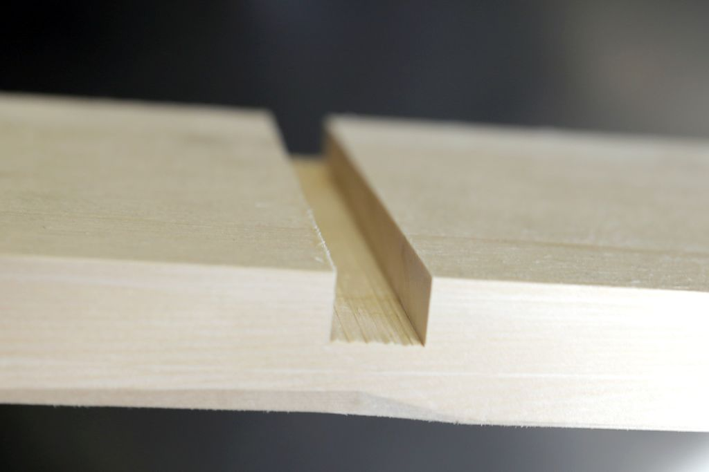
(This is an example of a dado cut)
I used the dado blade to remove many small portions of wood from the waste side. After using the two machines this is how my project looks.
Just a reminder that you can read more about the tools at the tools page (access at the top).
When using the disc sander line up your work straight up (it is very important that it is parallel to the sander), keep your fingers away from the disc sander, turn on the machine, and push your wood against the disc sander on the rotating-down side.
This how my project looks right now, with only one step left: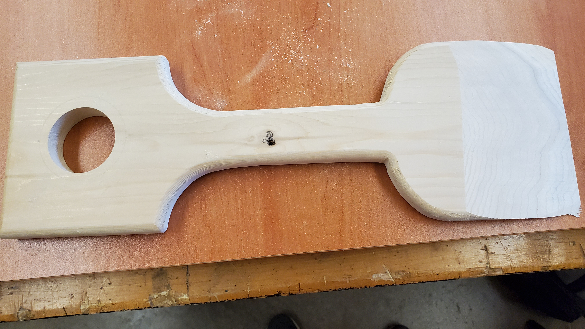
PS: You can add a rope through the hole if you'd like.
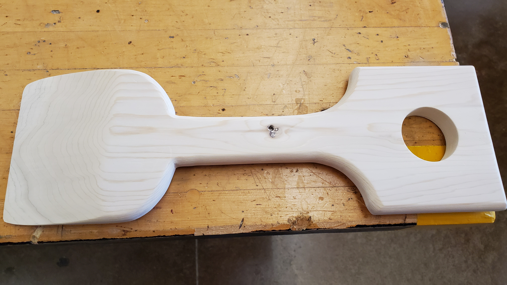
You can find more pictures in the final design page